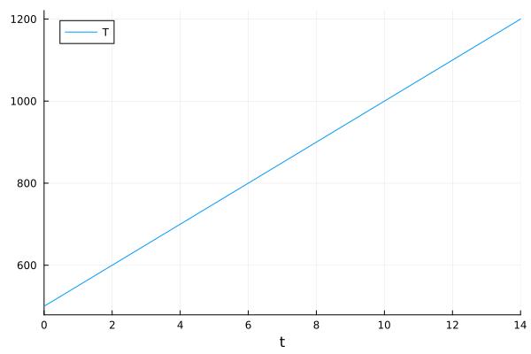
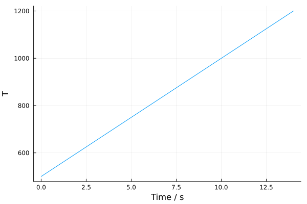
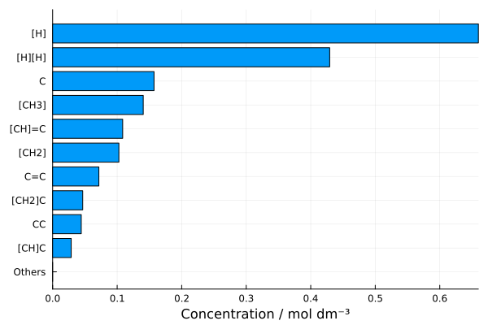

Getting Started
Here we will demonstrate how to perform a simple CRN exploration using Kinetica. Simulations within Kinetica are designed to be run as a script, consisting of the following elements:
- Parameter blocks,
- Simulation,
- Analysis.
We will begin by going through a basic example of each of these elements. Further details can be found in the Tutorials section of this documentation.
If you are attempting to recreate this tutorial for yourself, it relies on a few input files that are included in the main code repository. These files can be found in the examples directory, which can be accessed by cloning this repository:
git clone https://github.com/Kinetica-jl/Kinetica.jl.git
cd Kinetica.jl/examplesTo start with the tutorial, load the main Kinetica.jl package:
using KineticaWe'll also set a seed for Julia's random number generation, to ensure that this tutorial is fully reproducible. This can be ignored in regular use, but is useful here if you want to compare your results to those obtained here.
using Random
Random.seed!(12345)Parameter Blocks
The initial part of Kinetica simulation scripts usually consist of 3-4 blocks of parameters, depending on whether or not the simulation consists of only a kinetic calculation on a pre-existing CRN or if it also requires a CRN exploration before such a calculation can take place.
Simulation Conditions
The first parameter block should be a ConditionSet, which defines the experimental conditions a kinetic calculation should take place under. This block is usually defined first as later parameters often depend on it.
ConditionSet blocks allow for flexible definitions of any number of arbitrary conditions, each of which can be static (constant) or variable (time-dependent). For this simple CRN exploration, we will define a ConditionSet that specifies a linear temperature increase, from 300 K at time t = 0.0 to 1000 K at a rate of 50 K/s. Kinetica comes with a library of variable condition profiles, allowing this ConditionSet to be simply defined as follows:
conditions = ConditionSet(Dict(
:T => LinearGradientProfile(;
rate = 50.0,
X_start = 500.0,
X_end = 1200.0
)
))ConditionSet{Nothing}([:T], Kinetica.AbstractConditionProfile[LinearGradientProfile{Float64, Float64}(Kinetica._grad_LinearGradientProfile, 50.0, 500.0, 1200.0, 14.0, [14.0], nothing)], false, nothing)This generates a LinearDirectProfile for the linear temperature increase we are interested in, and binds it to the symbol :T for use within kinetic calculators. Further information on the types of condition profiles implemented in Kinetica can be found in the tutorial on Arbitrary Simulation Conditions.
We will be able to visualise this condition profile shortly, but we must first define a parameter block of ODE solution parameters.
Kinetic Simulation Parameters
The ODESimulationParams block defines all of the parameters needed when converting a CRN to a system of ODEs and integrating it in time. This includes parameters such as the simulation timespan, initial concentrations of reactants and the ODE solver being used.
For the purposes of this tutorial, we will construct the following ODESimulationParams block:
using OrdinaryDiffEq
using Sundials
pars = ODESimulationParams(
tspan = (0.0, get_t_final(conditions)),
u0 = Dict("C" => 1.0),
solver = CVODE_BDF(; linear_solver=:KLU)
)ODESimulationParams{Float64, Float64}((0.0, 14.0), Dict("C" => 1.0), Sundials.CVODE_BDF{:Newton, :KLU, Nothing, Nothing}(0, 0, 0, false, 10, 5, 7, 3, 10, nothing, nothing, 0), true, true, 1.0e-10, 1.0e-8, true, false, true, 0.001, 100000, false, false, nothing, :auto, 2.0, false)This block details the three essential parameters for any simulation in Kinetica:
tspan: Simulation timespan (in seconds, unless otherwise specified within kinetic calculator). Must be a tuple of(start_time, end_time). Here, we fetch the end time directly from theConditionSetdefined above usingget_t_final(conditions), which calculates the time at which all defined conditions have reached their final state.u0: Dictionary of initial concentrations. Here we define that kinetic simulations should start with 1.0 mol dm$^{-3}$ of methane (Cin SMILES notation), and no other reactants.solver: ODE solution algorithm to use, from those available in DifferentialEquations.jl. Here we load in theCVODE_BDFsolver from the Sundials.jl library, as this has been the best general-purpose solver in our testing. The KLU linear solver allows this ODE solver to work with sparse arrays, which are enabled by default.
Further details of the parameters available in this block can be found in the ODE Solution section.
CRN Exploration Parameters
In order to perform a CRN exploration, an exploration method must be chosen. Kinetica currently provides two: DirectExplore and IterativeExplore. For now we will use the former, as it is simpler.
DirectExplore explores all chemical reactions within a given radius of the starting reactants, irrespective of whether or not they will occur within a later kinetic simulation under the selected environmental conditions. This method is best suited to small CRNs under kinetically slow conditions, where few reactions are possible and complete sampling of all available reactions is easy.
Reactions are sampled using CDE, an external code for graph-droven sampling of reactions that is included with Kinetica.jl. CDE has its own parameters which must be set, but these are usually very similar for most CRN explorations. As such, a directory of template inputs must be provided for CDE to function. We provide such a template directory with this documentation, which can be used to run this tutorial. If you have cloned this documentation's repository, as suggested at the start of this tutorial, these files are in KineticaDocs.jl/examples/cde_template.
Once this is done, the exploration parameters can be set up as follows:
crn_dir = "./my_CRN"
exploremethod = DirectExplore(
rdir_head = crn_dir,
reac_smiles = ["C"],
rxn_convergence_threshold = 5,
cde = CDE(
template_dir = "../../examples/cde_template",
radius = 5,
sampling_seed = 1
)
)DirectExplore("./my_CRN", ["C"], CDE("../../examples/cde_template", 1, setenv(`/home/runner/.julia/artifacts/6a2166f24ea0a7ad19bb2c8494423bee5abe9f08/bin/cde`,["PATH=/home/runner/.julia/artifacts/6a2166f24ea0a7ad19bb2c8494423bee5abe9f08/bin:/home/runner/work/Kinetica.jl/Kinetica.jl/docs/.CondaPkg/env/bin:/home/runner/work/Kinetica.jl/Kinetica.jl/docs/.CondaPkg/env/condabin:/home/runner/.julia/artifacts/7973f2c7725e2d0eef7a95159454c4145f0945a2/bin:/opt/hostedtoolcache/julia/1.10.4/x64/bin:/snap/bin:/home/runner/.local/bin:/opt/pipx_bin:/home/runner/.cargo/bin:/home/runner/.config/composer/vendor/bin:/usr/local/.ghcup/bin:/home/runner/.dotnet/tools:/usr/local/sbin:/usr/local/bin:/usr/sbin:/usr/bin:/sbin:/bin:/usr/games:/usr/local/games:/snap/bin:/home/runner/work/Kinetica.jl/Kinetica.jl/docs/.CondaPkg/env/bin:/home/runner/work/Kinetica.jl/Kinetica.jl/docs/.CondaPkg/env/condabin", "DOTNET_SKIP_FIRST_TIME_EXPERIENCE=1", "GITHUB_RUN_NUMBER=64", "GITHUB_REF_NAME=v0.5.9", "RUNNER_ARCH=X64", "PERFLOG_LOCATION_SETTING=RUNNER_PERFLOG", "LD_LIBRARY_PATH=/opt/hostedtoolcache/julia/1.10.4/x64/bin/../lib/julia:/home/runner/.julia/artifacts/93ddb84060b49f38ec59d4b04a3109fedc4577d2/lib:/opt/hostedtoolcache/julia/1.10.4/x64/bin/../lib/julia:/opt/hostedtoolcache/julia/1.10.4/x64/bin/../lib", "GOROOT_1_20_X64=/opt/hostedtoolcache/go/1.20.14/x64", "ACCEPT_EULA=Y", "GOROOT_1_21_X64=/opt/hostedtoolcache/go/1.21.11/x64" … "JAVA_HOME_11_X64=/usr/lib/jvm/temurin-11-jdk-amd64", "GITHUB_TRIGGERING_ACTOR=joegilkes", "RUNNER_TEMP=/home/runner/work/_temp", "GITHUB_REPOSITORY_OWNER=Kinetica-jl", "MAMBA_ROOT_PREFIX=/home/runner/.julia/scratchspaces/0b3b1443-0f03-428d-bdfb-f27f9c1191ea/root", "GITHUB_EVENT_NAME=push", "DOTNET_NOLOGO=1", "OPENBLAS_MAIN_FREE=1", "ANDROID_NDK_HOME=/usr/local/lib/android/sdk/ndk/25.2.9519653", "AGENT_TOOLSDIRECTORY=/opt/hostedtoolcache"]), 1, 5, 1, 1, 1, true, false, false, "CHANGEME", "seeds.xyz"), 1000, 5)The parameters defined in this block are as follows:
rdir_head: This is the directory in which the raw CRN exploration files will be stored. We have definedcrn_dirabove because it will be useful to reference later.
Many CDE runs can be quite I/O-heavy, so it is useful to place this directory on a fast, directly-attached drive. Running the CRN exploration out of a network-attached spinning hard drive will probably be a bad time.
reac_smiles: Array of SMILES strings representing reactants in the initial reactant system. These will be fed to CDE to generate reactions. In this case, we will generate all reactions that can occur between two methane molecules.
Watch out for the meaning of these parameters changing slightly between DirectExplore and IterativeExplore. They can serve the same purpose, but methodologically do different things under the hood. See the tutorial on Iterative CRN Exploration for more information.
rxn_convergence_threshold: How many CDE iterations to perform with no new reactions discovered before considering the CRN converged.cde: CDE parameter block using the example input templates (change this path to the directory you saved yours into). This defines a reactive radius of 5, meaning that all reactions within 5 steps of the reactant system will be generated. Thesampling_seedparameter is usually not set, but we will set it here to make this tutorial reproducible. More information on this sub-block is also given in the Iterative CRN Exploration tutorial.
Kinetic Calculator
The final parameter block to set up is the simulation's kinetic calculator. This is an object capable of calculating rate constants for every reaction in a CRN under a given set of conditions. Kinetic calculators are one of the core points of modularity in Kinetica, with extension packages like KineticaKPM.jl extending the functionality of the main code by adding in more calculators for different requirements.
The main Kinetica.jl package only includes one kinetic calculator, the PrecalculatedArrheniusCalculator. This calculator calculates temperature-dependent rate constants using the Arrhenius equation:
\[k = Ae^{-\dfrac{E_a}{RT}}\]
The PrecalculatedArrheniusCalculator requires vectors of Arrhenius prefactors A and activation energies Ea for all reactions before the code is executed, and as such is typically only used when a CRN has been generated and these values have been determined outside Kinetica. However, for the purposes of this tutorial (where the random seed for CDE's reaction generation has been set, see above), we know the reactions that are going to be generated in advance, so we have provided approximate values to input into this calculator. These values are in KineticaDocs.jl/examples/getting_started/arrhenius_params.bson, and can be loaded in with:
using BSON
calc_pars = BSON.load("../../examples/getting_started/arrhenius_params.bson")Dict{Symbol, Any} with 2 entries:
:Ea => [583568.0, 1.50396e5, 298.368, 179399.0, 4.54722e5, 0.0, 3.42918e5, 0.…
:A => [1.75304e9, 8.38555e9, 8.38555e9, 6.58678e10, 1.75304e9, 6.58678e10, 1…again, replacing this path with the equivalent path on your computer. The calculator for this CRN can now be constructed:
calc = PrecalculatedArrheniusCalculator(calc_pars[:Ea], calc_pars[:A]; k_max=1e12)PrecalculatedArrheniusCalculator{Float64, Float64, Float64}([583568.0403811156, 150396.33567471226, 298.36813078383426, 179398.97754500827, 454721.52651407366, 0.0, 342917.8482538787, 0.0, 10383.829530681787, 3988.1902924157516 … 268032.430009133, 0.0, 483470.5999663456, 0.0, 198001.09224657645, 177487.81859099862, 0.0, 311401.7724600929, 493575.8537428231, 62418.51434939058], [1.753040501130113e9, 8.385547115265022e9, 8.385547115265022e9, 6.586784922986575e10, 1.753040501130113e9, 6.586784922986575e10, 1.7649385866068336e10, 2.0559926941980383e12, 2.1858279069945908e9, 3.1217976831806808e9 … 3.1349197730661407e9, 5.32816668820375e10, 2.5040665004486785e9, 1.0395242041213536e11, 9.5903737398745e8, 3.2761662611197853e10, 9.5903737398745e8, 9.676435097652968e8, 7.870200225058274e8, 4.1074827215296626e9], 1.0e12, "s", 1.0)For more advanced calculators that allow on-the-fly calculation of rate constants as reactions are generated, see the tutorial on Kinetic Calculators.
Simulation
Now that all of the parameter blocks have been constructed, we can start generating and simulating CRNs!
Visualising Condition Profiles
First, now that we have both a ConditionSet and a ODESimulationParams block, we can have a look at the variable temperature profile that we created. To begin, we need to construct a DifferentialEquations ODESolution for this profile. Kinetica provides a shortcut for this, with a one-liner that constructs ODEProblems and solves them for every variable condition in a ConditionSet:
solve_variable_conditions!(conditions, pars)We are manually triggering the solution of the ConditionSet here to visualise how the constructed temperature profile will look in the final simulation. However, calling solve_variable_conditions! as above is not neccessary in all Kinetica scripts. This function is normally run automatically before integrating the CRN ODEs, and does not typically need to be called like this.
With this in place, we can now plot our temperature profile's ODESolution to see how the simulation temperature is going to vary with time:
using Plots
plot(get_profile(conditions, :T).sol)
As expected, the temperature profile we constructed goes from 300 K to 1000 K at a rate of 50 K/s. Provided we are happy with this, we can continue to perform a CRN exploration and a kinetic simulation.
Running the Simulation
CRN exploration and kinetic simulation are wrapped under a single function call: explore_network. This takes the exploration parameters, the simulation parameters and calculator (which we will wrap under a single variable), and optionally a directory to save the finished results to. These results will additionally be returned by the function. To run the entire simulation, we simply call the following:
solvemethod = VariableODESolve(pars, conditions, calc)
res = explore_network(exploremethod, solvemethod; savedir="./my_CRN_out")[ Info: #-#-#-#-#-#-#-#-#-#-#-#-#-#-#-#
[ Info: Kinetica Direct CRN Exploration
[ Info: #-#-#-#-#-#-#-#-#-#-#-#-#-#-#-#
[ Info: No network levels found in ./my_CRN, starting network exploration from scratch.
[ Info: Setting up level directory tree in ./my_CRN/level_001
[ Info: Starting breakdown generation within a radius of 5 reactions.
[ Info: --------------------------
[ Info: ENTERING SUBSPACE 1
[ Info: --------------------------
[ Info: - Starting iterations.
[ Info: --- ITERATION 1 ---
[ Info: --- Reaction 1 ---
[ Info: - Starting new reaction mechanism generation.
[ Info: - Set up single-ended breakdown path sampling in ./my_CRN/level_001/subspace_001/reac_00001.
[ Info: - Running sampling...
[ Info: - Sampling completed successfully!
[ Info: - Importing generated reactions.
[ Info: - Reaction network now contains 4 reactions over 5 unique fragments.
[ Info: - New reactions discovered, reaction network not converged.
[ Info: - Skipping to next iteration.
[ Info: --- ITERATION 2 ---
[ Info: --- Reaction 2 ---
[ Info: - Starting new reaction mechanism generation.
[ Info: - Set up single-ended breakdown path sampling in ./my_CRN/level_001/subspace_001/reac_00002.
[ Info: - Running sampling...
[ Info: - Sampling completed successfully!
[ Info: - Importing generated reactions.
[ Info: - Reaction network now contains 6 reactions over 5 unique fragments.
[ Info: - New reactions discovered, reaction network not converged.
[ Info: - Skipping to next iteration.
[ Info: --- ITERATION 3 ---
[ Info: --- Reaction 3 ---
[ Info: - Starting new reaction mechanism generation.
[ Info: - Set up single-ended breakdown path sampling in ./my_CRN/level_001/subspace_001/reac_00003.
[ Info: - Running sampling...
[ Info: - Sampling completed successfully!
[ Info: - Importing generated reactions.
[ Info: - Reaction network now contains 6 reactions over 5 unique fragments.
[ Info: - No new reactions discovered for 1/5 iterations.
[ Info: --- ITERATION 4 ---
[ Info: --- Reaction 4 ---
[ Info: - Starting new reaction mechanism generation.
[ Info: - Set up single-ended breakdown path sampling in ./my_CRN/level_001/subspace_001/reac_00004.
[ Info: - Running sampling...
[ Info: - Sampling completed successfully!
[ Info: - Importing generated reactions.
[ Info: - Reaction network now contains 6 reactions over 5 unique fragments.
[ Info: - No new reactions discovered for 2/5 iterations.
[ Info: --- ITERATION 5 ---
[ Info: --- Reaction 5 ---
[ Info: - Starting new reaction mechanism generation.
[ Info: - Set up single-ended breakdown path sampling in ./my_CRN/level_001/subspace_001/reac_00005.
[ Info: - Running sampling...
[ Info: - Sampling completed successfully!
[ Info: - Importing generated reactions.
[ Info: - Reaction network now contains 8 reactions over 5 unique fragments.
[ Info: - New reactions discovered, reaction network not converged.
[ Info: - Skipping to next iteration.
[ Info: --- ITERATION 6 ---
[ Info: --- Reaction 6 ---
[ Info: - Starting new reaction mechanism generation.
[ Info: - Set up single-ended breakdown path sampling in ./my_CRN/level_001/subspace_001/reac_00006.
[ Info: - Running sampling...
[ Info: - Sampling completed successfully!
[ Info: - Importing generated reactions.
[ Info: - Reaction network now contains 8 reactions over 5 unique fragments.
[ Info: - No new reactions discovered for 1/5 iterations.
[ Info: --- ITERATION 7 ---
[ Info: --- Reaction 7 ---
[ Info: - Starting new reaction mechanism generation.
[ Info: - Set up single-ended breakdown path sampling in ./my_CRN/level_001/subspace_001/reac_00007.
[ Info: - Running sampling...
[ Info: - Sampling completed successfully!
[ Info: - Importing generated reactions.
[ Info: - Reaction network now contains 8 reactions over 5 unique fragments.
[ Info: - No new reactions discovered for 2/5 iterations.
[ Info: --- ITERATION 8 ---
[ Info: --- Reaction 8 ---
[ Info: - Starting new reaction mechanism generation.
[ Info: - Set up single-ended breakdown path sampling in ./my_CRN/level_001/subspace_001/reac_00008.
[ Info: - Running sampling...
[ Info: - Sampling completed successfully!
[ Info: - Importing generated reactions.
[ Info: - Reaction network now contains 14 reactions over 8 unique fragments.
[ Info: - New reactions discovered, reaction network not converged.
[ Info: - Skipping to next iteration.
[ Info: --- ITERATION 9 ---
[ Info: --- Reaction 9 ---
[ Info: - Starting new reaction mechanism generation.
[ Info: - Set up single-ended breakdown path sampling in ./my_CRN/level_001/subspace_001/reac_00009.
[ Info: - Running sampling...
[ Info: - Sampling completed successfully!
[ Info: - Importing generated reactions.
[ Info: - Reaction network now contains 16 reactions over 8 unique fragments.
[ Info: - New reactions discovered, reaction network not converged.
[ Info: - Skipping to next iteration.
[ Info: --- ITERATION 10 ---
[ Info: --- Reaction 10 ---
[ Info: - Starting new reaction mechanism generation.
[ Info: - Set up single-ended breakdown path sampling in ./my_CRN/level_001/subspace_001/reac_00010.
[ Info: - Running sampling...
[ Info: - Sampling completed successfully!
[ Info: - Importing generated reactions.
[ Info: - Reaction network now contains 22 reactions over 10 unique fragments.
[ Info: - New reactions discovered, reaction network not converged.
[ Info: - Skipping to next iteration.
[ Info: --- ITERATION 11 ---
[ Info: --- Reaction 11 ---
[ Info: - Starting new reaction mechanism generation.
[ Info: - Set up single-ended breakdown path sampling in ./my_CRN/level_001/subspace_001/reac_00011.
[ Info: - Running sampling...
[ Info: - Sampling completed successfully!
[ Info: - Importing generated reactions.
[ Info: - Reaction network now contains 22 reactions over 10 unique fragments.
[ Info: - No new reactions discovered for 1/5 iterations.
[ Info: --- ITERATION 12 ---
[ Info: --- Reaction 12 ---
[ Info: - Starting new reaction mechanism generation.
[ Info: - Set up single-ended breakdown path sampling in ./my_CRN/level_001/subspace_001/reac_00012.
[ Info: - Running sampling...
[ Info: - Sampling completed successfully!
[ Info: - Importing generated reactions.
[ Info: - Reaction network now contains 22 reactions over 10 unique fragments.
[ Info: - No new reactions discovered for 2/5 iterations.
[ Info: --- ITERATION 13 ---
[ Info: --- Reaction 13 ---
[ Info: - Starting new reaction mechanism generation.
[ Info: - Set up single-ended breakdown path sampling in ./my_CRN/level_001/subspace_001/reac_00013.
[ Info: - Running sampling...
[ Info: - Sampling completed successfully!
[ Info: - Importing generated reactions.
[ Info: - Reaction network now contains 24 reactions over 10 unique fragments.
[ Info: - New reactions discovered, reaction network not converged.
[ Info: - Skipping to next iteration.
[ Info: --- ITERATION 14 ---
[ Info: --- Reaction 14 ---
[ Info: - Starting new reaction mechanism generation.
[ Info: - Set up single-ended breakdown path sampling in ./my_CRN/level_001/subspace_001/reac_00014.
[ Info: - Running sampling...
[ Info: - Sampling completed successfully!
[ Info: - Importing generated reactions.
[ Info: - Reaction network now contains 26 reactions over 10 unique fragments.
[ Info: - New reactions discovered, reaction network not converged.
[ Info: - Skipping to next iteration.
[ Info: --- ITERATION 15 ---
[ Info: --- Reaction 15 ---
[ Info: - Starting new reaction mechanism generation.
[ Info: - Set up single-ended breakdown path sampling in ./my_CRN/level_001/subspace_001/reac_00015.
[ Info: - Running sampling...
[ Info: - Sampling completed successfully!
[ Info: - Importing generated reactions.
[ Info: - Reaction network now contains 26 reactions over 10 unique fragments.
[ Info: - No new reactions discovered for 1/5 iterations.
[ Info: --- ITERATION 16 ---
[ Info: --- Reaction 16 ---
[ Info: - Starting new reaction mechanism generation.
[ Info: - Set up single-ended breakdown path sampling in ./my_CRN/level_001/subspace_001/reac_00016.
[ Info: - Running sampling...
[ Info: - Sampling completed successfully!
[ Info: - Importing generated reactions.
[ Info: - Reaction network now contains 30 reactions over 10 unique fragments.
[ Info: - New reactions discovered, reaction network not converged.
[ Info: - Skipping to next iteration.
[ Info: --- ITERATION 17 ---
[ Info: --- Reaction 17 ---
[ Info: - Starting new reaction mechanism generation.
[ Info: - Set up single-ended breakdown path sampling in ./my_CRN/level_001/subspace_001/reac_00017.
[ Info: - Running sampling...
[ Info: - Sampling completed successfully!
[ Info: - Importing generated reactions.
[ Info: - Reaction network now contains 30 reactions over 10 unique fragments.
[ Info: - No new reactions discovered for 1/5 iterations.
[ Info: --- ITERATION 18 ---
[ Info: --- Reaction 18 ---
[ Info: - Starting new reaction mechanism generation.
[ Info: - Set up single-ended breakdown path sampling in ./my_CRN/level_001/subspace_001/reac_00018.
[ Info: - Running sampling...
[ Info: - Sampling completed successfully!
[ Info: - Importing generated reactions.
[ Info: - Reaction network now contains 30 reactions over 10 unique fragments.
[ Info: - No new reactions discovered for 2/5 iterations.
[ Info: --- ITERATION 19 ---
[ Info: --- Reaction 19 ---
[ Info: - Starting new reaction mechanism generation.
[ Info: - Set up single-ended breakdown path sampling in ./my_CRN/level_001/subspace_001/reac_00019.
[ Info: - Running sampling...
[ Info: - Sampling completed successfully!
[ Info: - Importing generated reactions.
[ Info: - Reaction network now contains 30 reactions over 10 unique fragments.
[ Info: - No new reactions discovered for 3/5 iterations.
[ Info: --- ITERATION 20 ---
[ Info: --- Reaction 20 ---
[ Info: - Starting new reaction mechanism generation.
[ Info: - Set up single-ended breakdown path sampling in ./my_CRN/level_001/subspace_001/reac_00020.
[ Info: - Running sampling...
[ Info: - Sampling completed successfully!
[ Info: - Importing generated reactions.
[ Info: - Reaction network now contains 30 reactions over 10 unique fragments.
[ Info: - No new reactions discovered for 4/5 iterations.
[ Info: --- ITERATION 21 ---
[ Info: --- Reaction 21 ---
[ Info: - Starting new reaction mechanism generation.
[ Info: - Set up single-ended breakdown path sampling in ./my_CRN/level_001/subspace_001/reac_00021.
[ Info: - Running sampling...
[ Info: - Sampling completed successfully!
[ Info: - Importing generated reactions.
[ Info: - Reaction network now contains 30 reactions over 10 unique fragments.
[ Info: - No new reactions discovered for 5/5 iterations.
[ Info: - Species subspace converged!
[ Info: Exploration complete, running kinetic simulation of current network.
[ Info: - Calculating variable condition profiles.
[ Info: - Filtering reactions...
[ Info: - Removed 0 filtered reactions from network
[ Info: - Performing calculator-specific network setup.
[ Info: - Removing low-rate reactions
[ Info: - Low rate cutoff: automatic (cutoff = 7.142857142857143e-10)
[ Info: - Removed 0 low-rate reactions from network.
[ Info: - Setting up ReactionSystem
[ Info: - Created constraint system for variable conditions.
[ Info: - Merged ReactionSystem with constraints.
[ Info: - Creating ODESystem.
[ Info: - Formulating ODEProblem
[ Info: - Sparse? true
[ Info: - Analytic Jacobian? true
[ Info: - Setting up integrator...
[ Info: - Solving network...
[ Info: - Solved.
[ Info: Direct network exploration complete.
[ Info: Saving finished network.
[ Info: Network saved to ./my_CRN_out/direct_network_final.bsonIn the event that a Kinetica CRN exploration fails before completion, all is not lost! As long as you still have the original head directory that the CRN was being explored in (crn_dir in this tutorial), both of Kinetica's exploration algorithms will detect where you left off and restart from there seamlessly. In the iterative exploration algorithm, Kinetica also creates checkpoint files with current CRN state and kinetic simulation results, which are saved under the savedir keyword argument specified above along with the final simulation output.
The resulting ODESolveOutput object contains the explored CRN, the kinetic simulation results, and all of the parameters and conditions that went into it. These can be easily and efficiently saved and loaded as needed (see Saving & Loading).
Analysis
The ODESolveOutput object has plot recipes defined for easy plotting using Plots.jl, allowing complex figures and statistics to be shown with a single line of code. To begin, we can look at how the concentrations of all of the species found during CRN generation vary over time under the variable temperature profile we specified. This is achieved by simply running
plot(res)
This CRN presents some interesting results! Accoding to the kinetics enforced by the calculator we have used, methane will not start breaking down into any of the free radical species discovered within this CRN until $t \approx 5 \text{ s}$. We could check the temperature that this occurs at by referencing the temperature profile we plotted above but this is also accessible from res by running
conditionsplot(res, :T)
Notice how, because we used the conditionsplot() function, the correct symbolically-indexed condition profile was obtained and axis labels were set accordingly.
If we want to obtain the numeric value of the temperature at $t \approx 5 \text{ s}$, we can interpolate this directly:
Tprofile = get_profile(res.conditions, :T)
Tprofile.sol(5.0)1-element Vector{Float64}:
750.0000000000002If we had multiple variable condition profiles, the above could also be done for them by simply passing in their bound symbols.
Similarly, we can also obtain the concentrations of all of the species in the reaction mixture at any time in the simulation through interpolation:
res.sol(5.0)10-element Vector{Float64}:
0.9996421449522648
1.5416557476432025e-11
1.890226409177222e-5
4.437383433572639e-8
0.0005096202478278694
1.174147050497486e-14
8.708554778233572e-5
1.6123208261645187e-8
8.585738509843695e-5
5.946273158255468e-6It is also very useful to analyse the final concentrations of species at the end of a kinetic simulation. Kinetica defines another plot recipe for this:
finalconcplot(res)
Next Steps
Now you're familiar with the basics of network exploration and kinetic simulation within Kinetica, you can learn more by looking through the other tutorials!